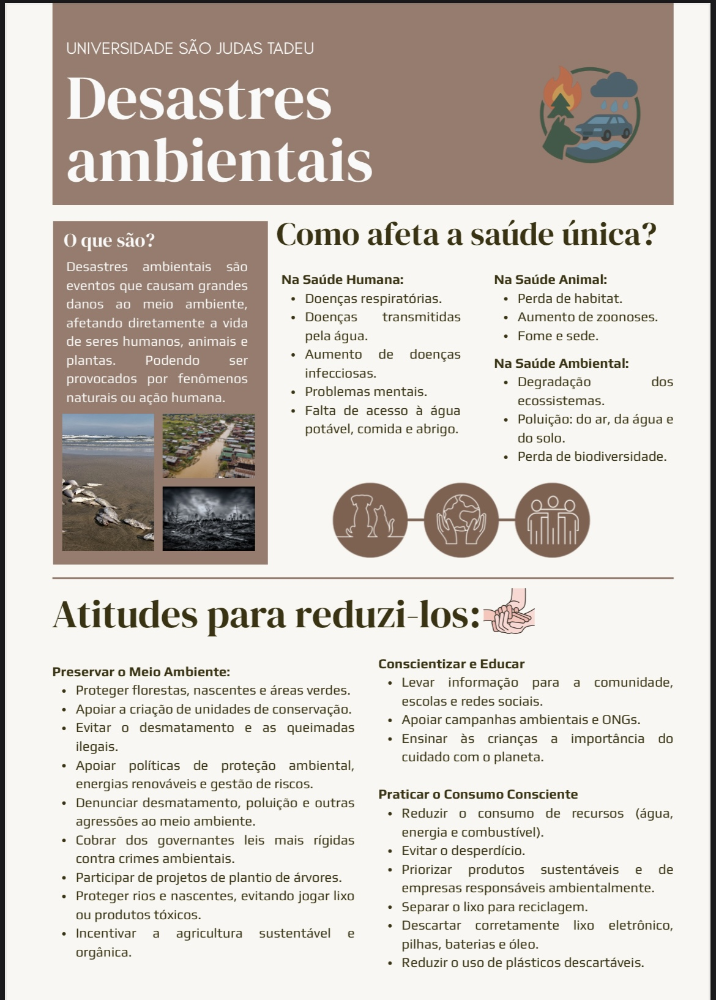
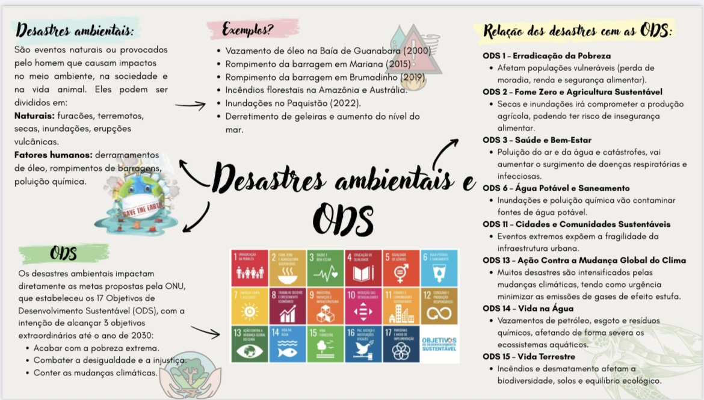
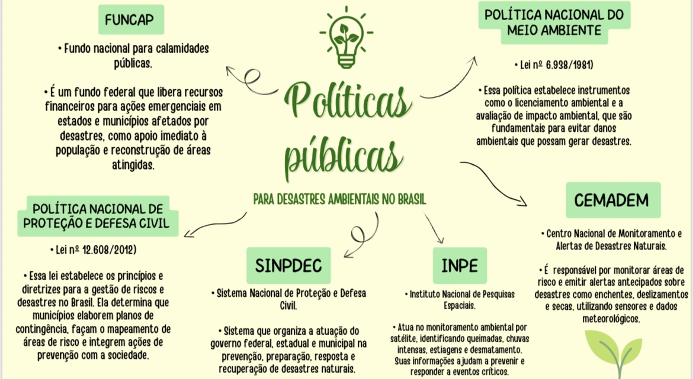

Saúde única é a tradução do termo em inglês “One health", que reconhece a interdependência entre a saúde humana, animal e ambiental. Essa abordagem tem como objetivo propor a cooperação, colaboração e coordenação entre diferentes profissões, disciplinas e setores para promover saúde de maneira abrangente e efetiva.
Colocar o conceito de saúde única em prática no mundo requer uma reflexão crítica que considere as particularidades sociais de cada país, bem como a inclusão de diversos atores sociais, visto que há diversos determinantes socioambientais que interferem nesse processo. Como destaca Silva et al. (2024), “a aplicação da Saúde Única deve considerar aspectos históricos, sociais e ambientais, promovendo uma articulação intersetorial que envolva também populações vulnerabilizadas e seus territórios”.

Os impactos ambientais afetam a saúde ambiental, humana e animal. Exemplos incluem terremotos, inundações e furacões, além de eventos antropogênicos como vazamentos químicos e acidentes industriais. Esses desastres contaminam solo e água, afetando a biodiversidade e causando doenças como leptospirose e arboviroses.
A Saúde Única recomenda:
Desastres ambientais como derramamento de óleo, enchentes e queimadas têm aumentado no Brasil, afetando gravemente humanos, animais e o ambiente. Esses eventos evidenciam a urgência de uma resposta integrada.
Desigualdades sociais ampliam a exposição a desastres. Pessoas em áreas precárias, com menor acesso a saúde, educação e saneamento, sofrem mais. Raça, renda, gênero e escolaridade são fatores agravantes.
O Brasil enfrenta desastres recorrentes causados por urbanização desordenada, desmatamento e mudanças climáticas. Falta de políticas de prevenção e ocupações irregulares intensificam os efeitos desses eventos.

